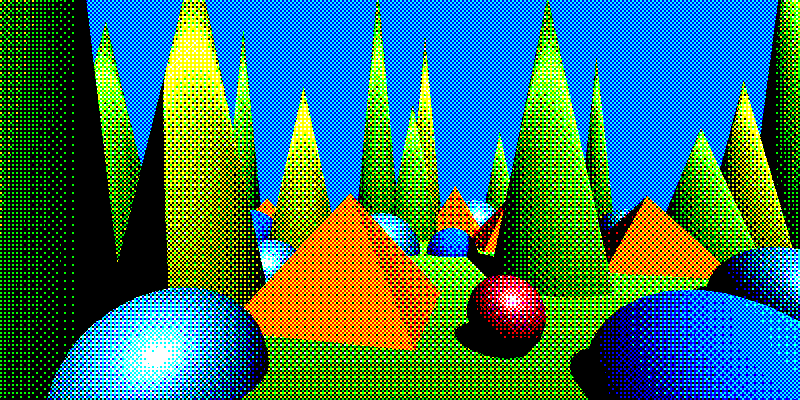
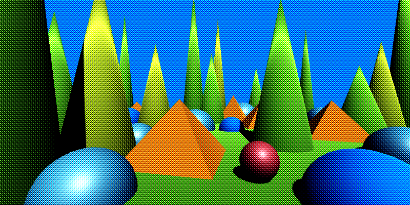

Dither Matrix Bias
Turns the image into a dithered version using three independent user-supplied matrices (one for each color channel). This effect is ideal for designing and testing custom dithering patterns using small numerical matrices.
The alpha channel is not changed by this effect.
Important
See also Dithering Tips
| Property | Range | Description |
|---|---|---|
| Matrix R / G / B | 🔢 | A floating-point matrix for each color channel. Values are normalized automatically. |
| Pixel Size | (0, ∞)² | Controls how large each matrix cell appears on the screen. Higher values make the pattern blockier. |
| Dither Amount Min | [-1, 1] | Minimum bias applied per channel based on the matrices. |
| Dither Amount Max | [-1, 1] | Maximum bias applied per channel. |
| Level Count | [1, ∞)³ | Per-channel quantization level count (R, G, B). |
| Smoothness | [0, 1] | Controls the softness of the quantization steps. |
| Pixel Offset | ℤ³ | Integer offset applied to the pixel grid before sampling the matrices. Useful for shifting or animating patterns. |
| Use UV Map | true / false | Enables UV-map–driven dithering instead of screen-space coordinates. |
| UV Map | 🖼️ | UV map texture used to drive matrix sampling instead of screen-space UVs if enabled. |
| Use Depth Compensation | true / false | If on, scales the pattern to compensate for depth, so texture look the same size at any distace when using UV map. It blends between adjacent depth bands when using a UV map to smooth transitions. |
Note
You could make a texture from the matices and use the Dither Texture Bias shader for slightly better performance. This shader can still be used for prototyping. To make the dither texture, see Dither pattern generator.
Tip
- You can render out a UV Map with the
UV Map Rendererfor the built-in pipeline, or the corresponding renderer feature for URP. There are more options for managing the scale.

